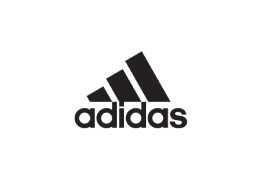

Informatie over Adidas
Adidas is een multinationale bedrijf, opgericht en gevestigd in Duitsland, die schoenen, kleding en accessoires ontwerpt en produceert. Het bedrijf is de grootste sportkledingfabrikant in Europa en de tweede grootste ter wereld, na Nike. Adidas producten worden onder verschillende merken verkocht, zoals Adidas, Reebok en TaylorMade. Het bedrijf bezit ook de merken Rockport, Reebok-CCM Hockey en Runtastic. Het bedrijf staat bekend om zijn handelsmerk van drie strepen en zijn "Adidas" is de slogan van het bedrijf. Het bedrijf werd opgericht in 1949 door Adolf "Adi" Dassler, die begon met het maken van sport-schoenen in de keuken van zijn moeder in Herzogenaurach, Duitsland.
De geschiedenis van Adidas
Adidas is opgericht in 1949 door Adolf "Adi" Dassler. Hij is begonnen met het maken van sportschoenen in zijn moeders keuken in Herzogenaurach, Duitsland. Na de Tweede Wereldoorlog begon Dassler met de productie van sportkleding en -schoenen onder de naam "Adi Dassler adidas Sportschuhfabrik". In 1952 introduceerde Dassler het beroemde "Driestreep" logo, nog steeds een belangrijk onderdeel van het merk. In de jaren 60 en 70 werd Adidas een van de populairste sportmerken ter wereld, met een aanzienlijke aanwezigheid in voetbal, basketbal, atletiek en andere sporten. In de jaren 80 en 90 breidde Adidas zijn merkenportfolio uit door overnames van andere sportmerken zoals Salomon en TaylorMade. In 2005 kocht het bedrijf Reebok en is nu een van de grootste sportkleding- en schoenenbedrijven ter wereld.
Bekendste Adidas schoenen
Adidas Superstar
De Adidas Superstar is een icoon en een van de populairste modellen van Adidas, oorspronkelijk gelanceerd als basketbalschoen in 1969 maar nu populair voor casual dragers en fashion-liefhebbers. Het heeft de kenmerkende driestreep-grafiek van Adidas en merkembleem op de zijkant, een rubberzool met shell toe-cap en gevoerde binnenkant voor comfort. Beschikbaar in verschillende kleuren en materialen, met versies zoals de Adidas Superstar 80s, Superstar Foundation en Superstar Slip-On.

Adidas 'Stan Smith'
De Stan Smith werd namelijk ontworpen door de zoon van Adidas-oprichter Adolf Dassler in 1963. De schoenen waren als eerst bedoeld om alleen te gebruiken tijdens het tennisen maar toen het eenmaal op de markt zat was het een grote hit geworden en iedereen begon ze te dragen. Het was de Franse tennisser Robert Haillet die tot zijn pensioen in '71 zijn naam aan de schoenen mocht verbinden.
Adidas Ultra Boost
De Adidas Ultra Boost is een hardloopschoen met unieke kenmerken voor comfort en prestaties. De schoen beschikt over een "Boost" tussenzool gemaakt van TPU voor energie-teruggave en betere demping, een ademende Primeknit bovenste laag voor een nauwsluitende pasvorm, en een Continental rubberen buitenzool voor extra grip. Het is een populaire keuze onder hardlopers en atleten en gewild onder sneakerliefhebbers.

Adidas Gazelle
De Adidas Gazelle is een klassiek model van Adidas, gelanceerd in 1966 en oorspronkelijk ontworpen als een trainingsschoen. Het is nu een populaire keuze voor casual dragers vanwege zijn eenvoudige en tijdloze design. Het is gemaakt van suède en heeft een rubberzool, een smalle pasvorm, en de kenmerkende driestreep-grafiek en merkembleem van Adidas. De schoen is beschikbaar in verschillende kleuren en materialen, en er zijn ook andere versies zoals de Adidas Gazelle OG en de Adidas Gazelle Indoor.